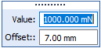
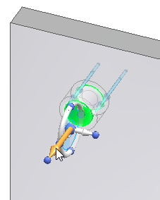
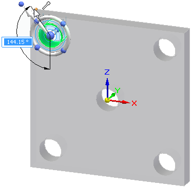
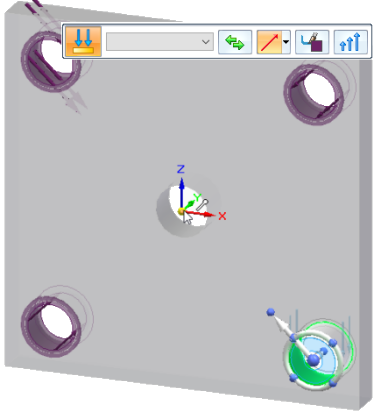
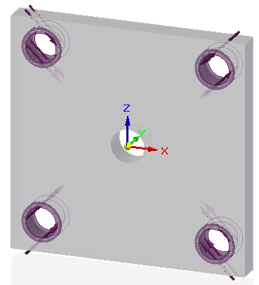
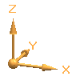
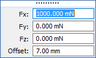

Define a physical load condition
Use this procedure to define a load boundary condition for a generative study. For more information about a specific type of load, click the links to the individual load help topics.
-
Choose one of the following load commands from the Generative Design tab→Loads group:
-
Select geometry:
-
Force loads only—The default geometry selection is Face. You can use the Selection Type list on the command bar to change this to Feature, which makes it easier to select all of the faces in one feature.
-
All load types—Use the Select tool, QuickPick, drag-select, or the Selection Manager to select one or more faces where you want to apply the load.
-
-
Type the load values in the dynamic input box as appropriate. Press Tab to move the cursor between fields. If you change the units, the value is converted to the default units.
Example:Value=The magnitude of the load.
Offset=The additional volume to keep between the face and the load during the generative process.

Note:The Offset value that is displayed as a default is the recommended value based on the volume of the design space and the default study quality setting defined on the Generative Design page of the Solid Edge Options dialog box.
A low study quality setting causes a higher default offset value to be displayed. A higher study quality setting requires less material volume to be kept, so the default offset value is lower.
-
Define the load direction:
-
For pressure and gravity loads—The load direction is determined automatically. Review the default direction in which the load symbols are pointing.
-
To change the direction 180 degrees, click the Flip Direction button
 on the command bar or press F on the keyboard.
on the command bar or press F on the keyboard. -
To apply a gravity load at an angle to the face, use the load magnitude input boxes to define the angle. For more information, see Gravity load.
-
-
For torque loads—Use the loads directional steering wheel to align the torus of the steering wheel with the rotation axis of the selected elements. Drag the steering wheel by the origin knob and click to fix it in place.
-
Force loads only—The default method for defining direction is Normal to Face
 , with the direction pointing out of the face. This option is not always appropriate
for the geometry you selected. You can select a different method to define the load
direction using the Direction Type list on the command bar.
, with the direction pointing out of the face. This option is not always appropriate
for the geometry you selected. You can select a different method to define the load
direction using the Direction Type list on the command bar.-
If you selected the cylindrical face of a hole, you may want to change the Direction Type to Along a Vector
 , and then use the loads directional steering wheel to align the primary axis (long axis) of the steering wheel with the axis of the
cylinder. You also can use the Along a Vector option and the steering wheel to align a force direction at an angle on a face. Examples
of both are shown below.
, and then use the loads directional steering wheel to align the primary axis (long axis) of the steering wheel with the axis of the
cylinder. You also can use the Along a Vector option and the steering wheel to align a force direction at an angle on a face. Examples
of both are shown below.To
Do this
Align the force direction with the axis of a cylinder.
Click+drag the steering wheel origin knob, so that the primary axis is oriented as shown below.

Align the force direction at an angle locked to a face.
-
Click+drag the steering wheel origin knob, so that the primary axis is oriented on the face as shown below.
-
Shift+click the primary bearing at the tip of the primary axis of the steering wheel to rotate it within the plane of the face.
-
Locate a keypoint and click to select it.
Example:You can locate a keypoint on the corner of the part.

Example:Another technique is to locate the base coordinate system at the center of the part.

Note:Notice the difference in the force direction symbols on the part. The holes at top-right and bottom-left were created using the Normal To Face option, while the forces on the holes at top-left and bottom-right were created using the Along A Vector option .

-
-
When you want to define an angle that is not parallel or perpendicular to a face without using the steering wheel, use direction vector components.
-
From the Direction Type list, choose the Components option
 .
.A coordinate system showing the current orientation of the design space is displayed for reference.

-
In the dynamic input boxes, type the X, Y, and Z load direction component values.

-
-
-
-
Right-click or press Enter to accept the load.
-
Click to finish the command.
To edit the load you created, double-click the load name in the Generative Design pane, for example Force 1. This displays the load and the command bar in the graphics window, for you to change the inputs.